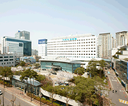
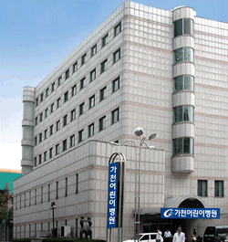
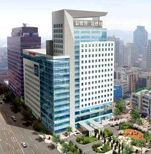
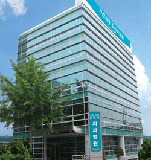
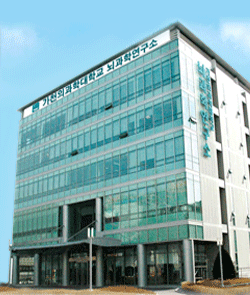
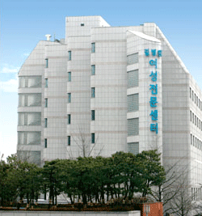
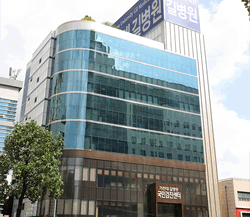
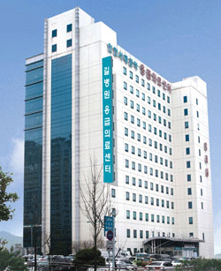
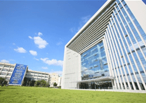

International Healthcare Center
Specialized Centers
-

- Main Building
- Gachon University Gil Hospital began from Lee Gil Ya Obstetrics in 1958 and devoted with the spirit of 'Philanthropy, Service, and Patriotism,' for more than half a century. Gachon University Gil Hospital established the OCS (Order Communication System) in 1987 for the first time in Korea, followed by perfectly establishing a Ubiquitous-Hospital. It is managed as specialized and independent medical systems such as Cancer Center, Heart Center, Women Center, Ophthalmology and Otorhinolaryngology Center, Emergency Treatment Center, and Dental Center along with the main building that opened in 1987, and there is 'Gachon Brain Health Center' that professionally examines and treats brain diseases for the first time in Korea. It has diverse special medical equipments such as 3.0T MRI, digital Angio, Dual Source CT, PET-CT, and digital mammography as well as introducing 64slice MDCT for the first time in Korea. Under the vision, 'We will establish research-oriented hospital with customer satisfaction,' Gil Hospital concentrates on the realization of specialization and differentiation through special centers per disease establishment of customized system of treatment, establishment of the R&D system with the collaboration of industry and academy, customer-friendly and convenient hospital, the training of creative global talents.
-

- Children's Hospital
-
Children's Hospital of Gachon University Gil Medical Center has 100 general sickbeds, 40 sickbeds in infant ICU,
10 sickbeds in pediatrics Hemato-oncology ward and 10 sickbeds in pediatrics heart ward.
Specialized treatments are available for pediatric patients in neonatology, nephrology, hemato-oncology, cardiology,
digestive and nutrition, neurology, infectious diseases, pulmonology and allergy, endocrinology and genetic metabolism.
Also, we are providing delicate education for children who are hospitalized for a long-term treatment to raise their awareness of
diseases as well as effect of treatment.
-

- Cancer Center
-
Gachon University Gil Hospital’s Cancer Center strives to be the world’s best Uniquitous hospital. In an effort to provide our patients more accurate medical services in real-time, we have introduced SmartCard system, IPTV(Internet Protocol Television) allowing access to treatment information on hospital beds, mobile-based POC(Point of Care) system, and automated comprehensive examination center. In addition, we are equipped with Novalis Tx, the world’s best radiation equipment with accuracy of irradiation down to 2.5 , and various hightech devices aiding the diagnosis and treatment of cancer. Other efforts include one-stop services, collaboration systems, and various training and support programs for cancer patients and their families.
-

- Dental Center
-
Gil Dental Hospital, which is Korea’s first integration of Omni Practice and Poly Clinic, operates special clinics for dental implants, temporomandibular joint, esthetic prosthodontics & periodontics, invisible orthodontics, and laser clinic. We also have specialized research facilities, such as Implant Research & Education Center, All-ceramic Research Center, and Facial Deformity Center. For more accurate diagnosis & treatment, we have acquired the world’s best dental CT(KaVo 3D exam) & Program(Invivo).
-

- Gachon Brain health Center
-
The Gachon Brain Health Center is the world’s first examination and treatment center specialized in the brain and Asia’s only brain science center with the ‘7.0T MRI’ for “reading the brain as reading the palm of the hand”. With outstanding researchers and competitive technologies, we are leading the world in studying and treating various brain-related diseases, such as dementia, stroke, brain cancer, and Parkinson’s disease. The Gachon Brain Health Center offers a collaborated platform for medical staffs from Neurology, Neurosurgery, Psychiatrics, and Radiology to provide specialized and customized examination and treatment programs. Available examinations include ‘precise brain examination’ and specialized examinations for dementia, Parkinson’s disease, young / mid-aged people’s stroke, and brain cancer. We also offer ‘personalized examinations’ where each individual can choose the programs they desire. Also, the Gachon Brain Health Center was certified by Joint Commission International(JCI) for the first time in the world to exercise its global trust in its capacity to provide world-class medical services(not currently accredited).
-

- Women’s Center
-
Opened in 1994, Women’s Hospital is Korea’s first hospital to specialize in women’s health. With Perinatal Period Clinic, Infertility Clinic, Gynecological Endoscopy Clinic, Urogynecology Clinic, Menopause Clinic, Women’s Tumor Clinic, Wellbeing Clinic and Breast Clinic, we offer specialized services and competent medical staff dedicated to ‘provide total medical services for women’s long health.’ Also, Women’s Hospital has been offering ‘free uterine cancer test’ for almost 50 years since the hospital was Lee Gil Ya Obstetrician and Gynecologist Center. By doing so, we are contributing to the treating and preventing sicknesses related to an increase in women’s cancers.
-

- National Health Checkup Center
-
At Gachon University Gil Medical Center, National Health Checkup Center provide every checkups to discover diseases at early
stage. Appropriate checkups for infant, adolescence, middle age, and elderly are available.
Moreover, health checkups for Korean and foreign employees (H-2, E-2, E-9 visa) are available as well.
For workers who are frequently exposed to dust, chemical substances and noise, special checkup every 6 to 24 months is
strongly advised.
-

- Incheon West-Coast Emergency Center
-
Gachon University Gil Hospital’s Incheon West-coast Emergency Center is responsible for the coastal and in-land region covering west sea vacinity of Incheon and is also Korea’s No.1 emergency center obtaining the highest level of evaluation results for 8 consecutive years. With specialists and residents in Emergency Medicine, we offer professional and intensive treatment for injuries, cardiovascular/cerebro-vascular diseases, intoxication, infant care, and CPR. We are at the final stage to treat urgent patients with an independent injury team available 24 / 7. We are also working closely with secondary hospitals in the region for more timely treatments of urgent patients.Gil Dental Hospital
-

- Gachon Center
-
In Gachon Center that opened in 1991, there are Health Management Department, Artificial Heart Center, and professors' lab. The Health Management Department is in charge of physical examination of many businesses and organizations in the capital region. On the ground floor, there is a professors' lab for the development and research of advanced medical technology. Gachon Center is lighting up brightly with the effort of Gil Hospital professors and research teams in order to provide the best medical service to people.